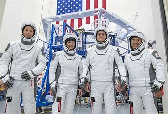
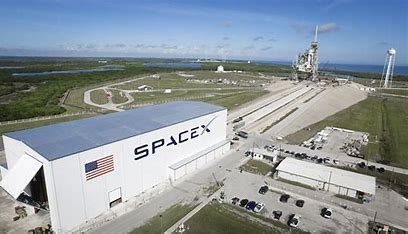
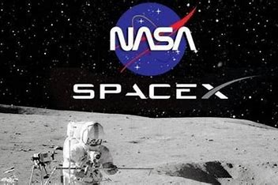

SpaceX y la NASA envían su primera misión tripulada al espacio La compañía de Elon Musk logró enviar y devolver sanos y salvos a dos astronautas a la Estación Espacial Internacional en colaboración con la NASA.La agencia espacial americana volvió a viajar al espacio desde suelo estadounidense tras casi una década. El ensayo ha acreditado a las naves de la empresa privada para la realización de vuelos tripuladas de la NASA y abrirá la posibilidad de enviar misiones a la Luna o a Marte. Para mas información visite aqui



<
>